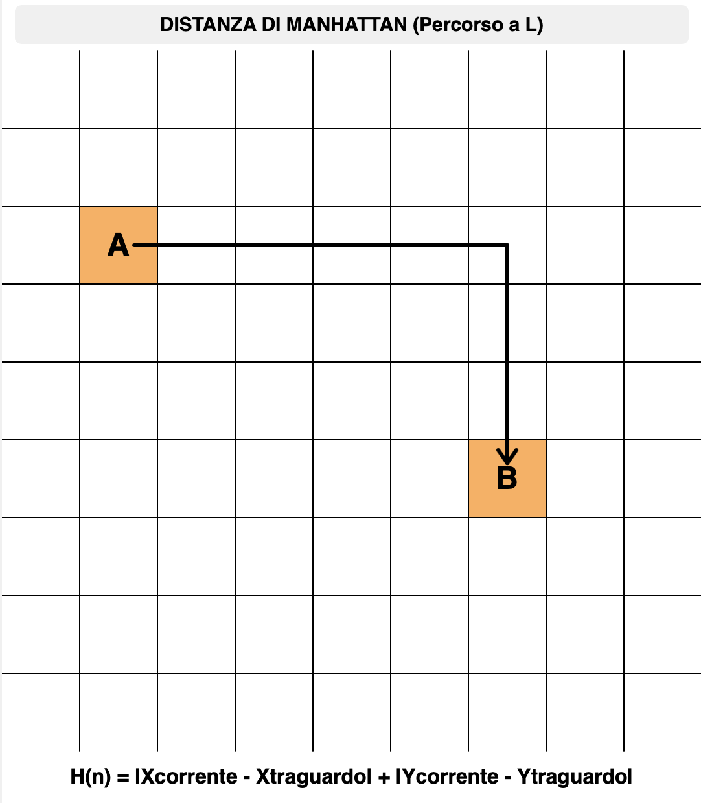
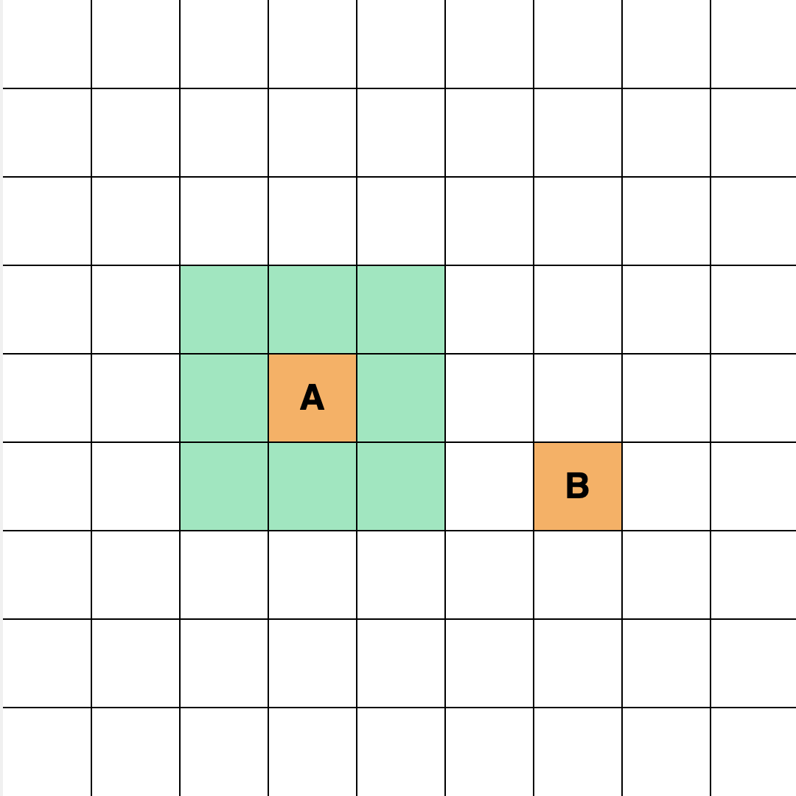

algoritmo a-star
sezione 1
cos'è?
L'algoritmo A* (detto A-star) è un algoritmo di ricerca e pathfinding, ovvero il processo informatico che permette di determinare il percorso più efficiente tra due punti all'interno di una rete (grafo) formata da un insieme di posizioni (nodi) e delle connessioni (archi) tra di loro. Questo algoritmo è uno dei più utilizzati in informatica, robotica e videogiochi per trovare il percorso tra un dato nodo iniziale e un dato nodo di arrivo. L’algoritmo A* è stato descritto nel 1968 da Peter Hart, Nils Nilsson, e Bertram Raphael e combina le caratteristiche dell’algoritmo di Dijkstra e la ricerca best first, che analizzeremo successivamente; grazie all’utilizzo di una stima euristica, è celebre per la sua estrema efficienza.
sezione 2
come funziona?
Dato un punto di partenza e uno di arrivo, l’algoritmo A* sceglie a ogni passaggio il nodo più conveniente da percorrere in base al suo costo totale F ottenuto dalla somma dei parametri G e H.
- Costo G: il costo di movimento effettivo per spostarsi dal nodo iniziale al nodo corrente.
- Costo H: funzione euristica che calcola approssimativamente la distanza tra il nodo attuale e il nodo di destinazione.
- Costo F: la valutazione complessiva del nodo, data dalla somma del costo G e del costo H.
Funzione dell’algoritmo: F(n) = G(n) + H(n)
diversi modi per calcolare h

esempio dell'algoritmo a* in funzione

Ad ogni passaggio l’algoritmo sceglie il nodo con la F minore, quindi con il costo minore. I nodi possibili da esplorare fanno parte di una lista open, quelli già analizzati fanno parte di una lista closed. Nel caso in cui percorra un nodo e solo dopo si accorga che esisteva una strada più breve per raggiungerlo, l’algoritmo torna indietro e percorre la strada migliore.
sezione 3
perchè è efficiente?
Come già detto, l’algoritmo A* nasce dall’algoritmo di Dijkstra, un algoritmo di pathfinding. Anche se entrambi trovano il percorso più efficiente, c’è una differenza sostanziale nel modo in cui operano:
- Algoritmo di Dijkstra: Esplora tutti i percorsi possibili dal nodo di partenza, garantendo il percorso più breve ma esaminando potenzialmente molti nodi inutili.
- Algoritmo A*: Incorpora un’euristica per dare priorità ai percorsi che sembrano più promettenti, spesso portando a soluzioni più rapide concentrandosi sulle aree rilevanti del grafo.
In poche parole l’algoritmo di Dijkstra considera solamente il costo impiegato dal nodo di partenza e non ha idea della direzione da prendere fino al raggiungimento dell’obiettivo; mentre l’algoritmo A* implementa un tipo di ricerca best first, in cui la scelta migliore è data dalla funzione euristica h, che fornisce una stima del costo rimanente per raggiungere l’obiettivo e che guida verso la meta, preferendo i nodi più vicini a questa e rendendo il processo molto più veloce. Bisogna tuttavia notare che se presenti ostacoli, ci sarà bisogno di qualche backtrack occasionale, ma intuitivamente questa è una strategia che ha buone possibilità di trovare l'obiettivo velocemente con la strada migliore possibile.
confronto tra dijkstra e a*
sezione 4
vari tipi di costi
Finora abbiamo analizzato casi in cui il costo dipende dalla distanza percorsa, ma questo può essere definito con moltissimi altri criteri, inoltre potrebbe non essere uniforme il costo per muoversi da un nodo all’altro, ad esempio in una mappa in cui sono presenti diversi tipi di terreni con costi diversi (sentiero, fiume, montagna…) come in alcuni videogiochi.
In questo esempio viene considerato quanto costa muoversi da un nodo a un’altro piuttosto che la distanza percorsa, preferendo i nodi con costo di movimento minore, anche se non formano il percorso più breve possibile.
esempio variabile costo
sezione 5
mappa interattiva (urbino)
In questo strumento interattivo puoi applicare l'algoritmo A* sulla mappa reale del centro storico di Urbino. Clicca su due punti per calcolare il percorso ottimale.